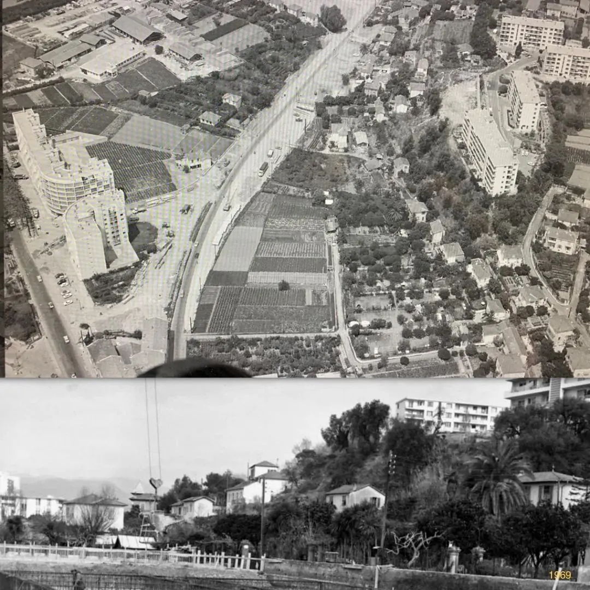
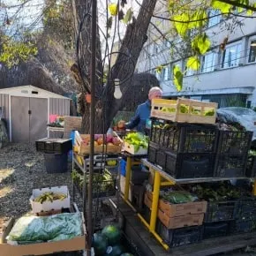
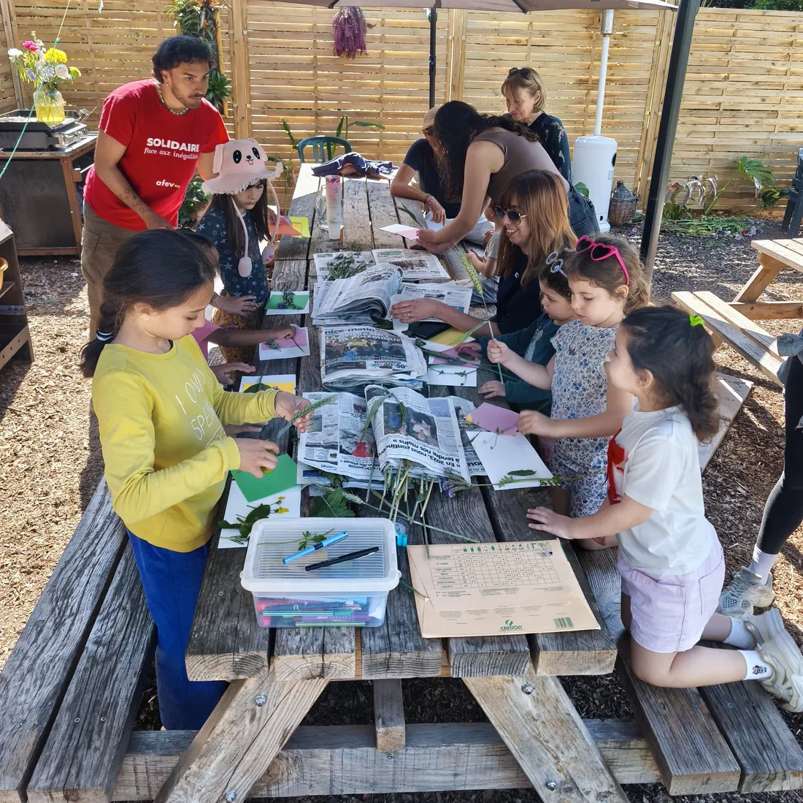
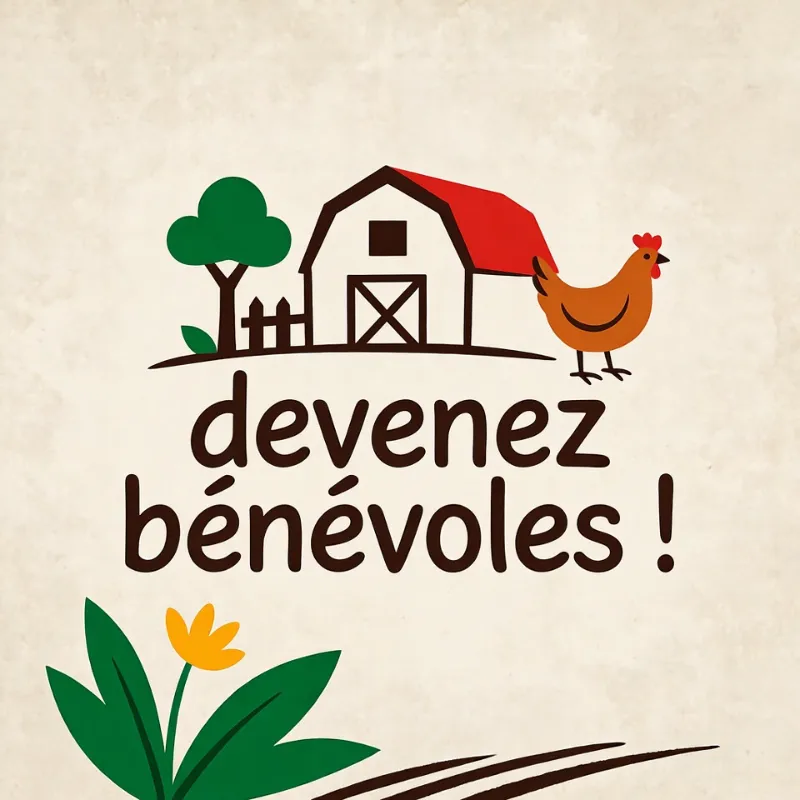
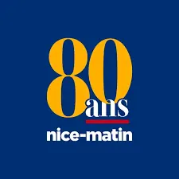

.webp)
Soins aux animaux
Les soins quotidiens des animaux : préparation des espaces, distribution de nourriture, entretien des enclos.
Depuis 1969 Quartier des Moulins, Nice
Un potager en permaculture, 200 animaux, une cuisine solidaire et un centre de compostage ouverts à toutes et à tous, au cœur de Nice Ouest.
Notre histoire
Plus de cinquante ans d'histoire niçoise, portée par un homme puis par tout un quartier.
La Ferme Bermond a été fondée en 1969 par Vincent Bermond, brigadier-chef de la police municipale de Nice. L'initiative voit le jour lorsque la mairie de Nice lui propose de contribuer à la création d'une brigade équestre, donnant naissance au « Cavalier du Mont Boron ».
Ce projet, sans imaginer les implications sociales, économiques et culturelles futures, a permis à la ferme d'évoluer vers un espace social unique.

Aujourd'hui, elle relie agriculture urbaine, permaculture, écocitoyenneté, développement durable et économie sociale et solidaire. Son objectif principal : créer des liens sociaux et intergénérationnels et promouvoir une alimentation saine, locale et solidaire. Elle s'inscrit profondément dans l'histoire du quartier des Moulins, en tant que lieu à la fois historique et culturel.
À la disparition de Vincent Bermond, en décembre 2016, ses amis initient un processus de transition. Ils s'efforcent de pérenniser cette initiative d'agriculture urbaine, tout en réfléchissant aux enjeux environnementaux contemporains. Leur mot d'ordre : agir collectivement pour construire un avenir durable. La ferme devient alors un lieu où l'environnement est au service du social, et inversement, renforçant sa vocation de créer des connexions inter-sociales.
L'histoire de la ferme repose également sur des questions fondamentales posées par ses membres : comment habiter l'espace ? Comment lui donner vie ? Comment inscrire la ferme dans l'histoire du quartier et de la ville ?
Ces réflexions ont mené à la création d'un jardin potager et d'un espace de rencontres et d'interactions, favorisant l'intégration et la participation des personnes.
Un des grands objectifs de la ferme est de devenir un espace de cohabitation entre hommes, animaux et plantes. Elle met en avant des interactions « inter-sociales, interculturelles et inter-espèces », où chacun contribue à un ensemble harmonieux, riche en complémentarités.
.webp)
En 2017, la ferme devient une association sous le nom de « La Ferme Bermond - Les amis de Vincent ». Ce tournant associatif marque le début d'un développement progressif grâce à l'implication des bénévoles, adhérents, et aux soutiens publics et privés. Ce travail quotidien fait de la ferme un espace d'intégration intergénérationnel et interculturel, et un lieu de transmission de savoir-faire.
Entre 2022 et 2024, dans le cadre du programme gouvernemental « France Relance », la ferme bénéficie d'une rénovation globale, grâce à des partenariats avec la Ville de Nice, la Métropole, la Région Sud, la CAF et plusieurs fondations privées. Les travaux réalisés incluent :
.webp)
Missions & vision
La ferme est un lieu d'éducation populaire, ouvert à tous, créant des liens intergénérationnels, multiculturels et sociaux. Située dans un quartier prioritaire et à un carrefour stratégique (aéroport, gare SNCF, tram, gare routière, Marché d'Intérêt National), elle offre un accès unique à une diversité de publics.
Son objectif est de promouvoir et codévelopper des projets innovants associant la protection de l'environnement, l'éducation et le développement social et économique. Ces initiatives sont réalisées en partenariat avec des acteurs publics et privés, autour de thèmes tels que le maraîchage, la permaculture et les écosystèmes durables.
.webp)
En tant qu'acteur de la protection de la nature et de la biodiversité, la ferme s'appuie sur des savoirs ancestraux et des pratiques agroécologiques telles que la milpa ou la syntropie. Cette méthode favorise la biomasse, la création de microclimats et le développement de la faune et de la flore, tout en améliorant les sols et en réduisant les besoins en eau.
La ferme sensibilise différents acteurs et participants aux enjeux liés à l'écocitoyenneté, au développement durable, à la protection de la biodiversité, au bien-vivre et à la transition écologique. Elle met un point d'honneur à initier les enfants à ces questions pour encourager la curiosité, le respect du vivant et la transmission de valeurs humaines, sociales et éthiques.
.webp)
La ferme s'engage à promouvoir le bénévolat grâce à des formations inclusives axées sur trois pôles.
Les soins quotidiens des animaux : préparation des espaces, distribution de nourriture, entretien des enclos.
.webp)
La cuisine et la transformation des produits : collecte, préparation, service, entretien.
.webp)
Le maraîchage : semis, plantations, entretien des cultures et récoltes.
Grâce au soutien des pouvoirs publics (État, Région, Département, Métropole, Ville de Nice, CAF), la ferme contribue à l'insertion sociale et professionnelle, en proposant des emplois, des stages et des opportunités pour les jeunes et adultes en alternance, apprentissage ou professionnalisation.
Elle construit un modèle économique, social et associatif fondé sur la coopération entre acteurs de l'économie sociale et solidaire, entreprises, associations, fondations et pouvoirs publics. Son ambition : atteindre une autosuffisance financière, nourricière et énergétique.
.webp)
Dans ses réflexions, la ferme vise une symbiose parfaite entre végétaux, minéraux et animaux, adaptée à la perspective du réchauffement climatique grâce à des plantations nécessitant de moindres besoins en eau, à la végétalisation des espaces urbains et à la promotion de relations harmonieuses entre humains et nature.
Elle prévoit aussi le développement de son centre de compostage, d'un séchoir, d'un four solaire, d'un rucher et d'un système d'aquaponie. Ces projets s'inscrivent dans une démarche innovante au service de la transition socio-écologique.
.webp)
Ce que nous faisons
.webp)
.webp)

.webp)
.webp)
.webp)
Notre second site
2 000 tonnes d'enrobés retirées, 1 900 tonnes de terre apportées : la renaissance d'un site urbain abandonné.
Le « 18 », situé à proximité immédiate de la Ferme Bermond, illustre la transformation exemplaire d'un ancien site urbain abandonné. Son nom fait référence à l'adresse des anciens bâtiments de la « Maison pour Tous », qui occupaient précédemment le 18 boulevard Paul Montel.
La réalisation de ce projet a été rendue possible grâce à une collaboration entre la Ferme Bermond, la Ville de Nice, le Conseil Départemental des Alpes-Maritimes et Unis-Cité.
.webp)
Dans le cadre du programme Green Deal 2024, intitulé « 50 heures Jeunes Engagés pour le Climat », 89 jeunes âgés de 18 à 24 ans et 6 jeunes en service civique ont contribué activement à la re-végétalisation du site. Encadrés par les équipes de la Ferme Bermond et épaulés par des bénévoles, ces jeunes ont joué un rôle clé dans cette transformation écologique.
Prévu pour devenir un véritable poumon vert de Nice Ouest d'ici 2025/2026, Le « 18 » soutient une agriculture syntropique sur sol vivant. Ce système repose sur la coopération naturelle entre plantes, microfaunes et invertébrés afin de recycler les nutriments sans recours aux intrants artificiels.
.webp)
Après le retrait de 2 000 tonnes d'enrobés, l'ajout de 1 900 tonnes de terre et de 160 m³ de broyat végétal, les vers de terre, notamment, contribuent désormais au renouvellement naturel du milieu. Le projet intègre également des innovations majeures telles que l'implantation d'arbres fruitiers, la création d'un bassin naturel et l'installation d'un système d'irrigation goutte-à-goutte.
Ces avancées enrichissent ce modèle d'agroforesterie, transformant le site en une plateforme pédagogique. Favorisant la syntropie et l'agroécologie, Le « 18 » offre un cadre propice à l'apprentissage de l'écocitoyenneté et au développement durable. Ces efforts s'inscrivent dans le contrat de ville métropolitain « Engagements Quartiers 2024-2030 ». En renouvelant la relation entre les humains et leur environnement, Le « 18 » incarne une vision harmonieuse et résiliente où chaque geste compte pour renforcer la dynamique d'un territoire durable.
.webp)
Cultiver, cuisiner, partager
Un fil conducteur reliant les sols fertiles aux cuisines accueillantes, les savoir-faire du terroir aux engagements contemporains.
« De la terre à l'assiette » crée des connexions profondes entre humains, plantes, animaux et écosystèmes, nourrissant non seulement le corps, mais aussi le lien social, les apprentissages et les émotions.
Depuis 2023, dans le cadre de la médiation socio-culturelle, deux postes salariés à temps plein, financés à 80 % par l'État, ont été créés pour animer et enrichir ce projet éducatif axé sur le maraîchage urbain et la transformation alimentaire solidaire.
.webp)
En suivant le rythme des saisons, les participants expérimentent les semis, plantations, désherbage et récoltes, tout en découvrant les pratiques d'agriculture urbaine, l'agroforesterie et la gestion durable des ressources.
Les légumes du potager et les invendus alimentaires récupérés auprès de grossistes et partenaires (MIN de Nice) sont transformés dans une démarche proactive de lutte contre le gaspillage alimentaire. Ces ateliers collectifs favorisent l'apprentissage culinaire, la convivialité et l'accès à une alimentation saine, locale et solidaire.
.webp)
Chaque récolte se termine autour d'une table. Repas participatifs, repas solidaires, visites de groupes et moments partagés avec les habitants du quartier : la cuisine de la ferme est le point de rencontre de toutes les générations et de toutes les cultures qui font vivre les Moulins.
En une année, ce sont 184 repas participatifs et 1 800 repas solidaires et bénévoles qui ont été servis.
Sur place
Quatre façons de vivre la ferme, seul, en famille ou en groupe.
.webp)
De la basse-cour joyeuse (poules, oies, canards, cailles) aux petits mammifères espiègles (lapins, cochons d'Inde, chiens), sans oublier nos élégants oiseaux (canaris, mandarins, perruches) et quelques poissons colorés, invertébrés et insectes qui peuplent nos bassins.
De la plantation au semis, en passant par la récolte et la gestion des déchets verts dans notre zone de compostage ouverte à tou.te.s les habitant.e.s du quartier.

Participez à nos ateliers de cuisine, où vous pourrez transformer les légumes fraîchement récoltés ou récupérés auprès de nos partenaires (MIN de Nice), dans une démarche anti-gaspillage.
Participez aux soins quotidiens de nos animaux et partagez des moments uniques avec eux.
Le fruit de nos récoltes
Tomates, aubergines, courgettes, concombres, blettes, poivrons, salades, et une variété d'herbes du jardin.
Cerises, abricots, figues, kakis, nèfles, poires, prunes et agrumes.
Pommes de terre, maïs, haricots, tournesols et amarantes.
.webp)
Confitures, gelées, sirops et sauces préparés avec nos récoltes.
Pondus par nos poules, oies, canes et cailles, parfaits pour vos omelettes, pâtisseries, quiches ou autres recettes gourmandes.
Notre impact
Une année d'activité au service du quartier des Moulins et de tout le bassin niçois.
Nous rejoindre
Il existe plusieurs façons de rejoindre la ferme : choisissez celle qui vous convient.
1 € / adhésion symbolique
Une adhésion symbolique d'1 € permettant l'accès à la ferme, aux repas et aux produits.
20 € / an
Une adhésion annuelle de 20 € sans contrepartie, mais avec des tarifs réduits sur les activités de la ferme.

Gratuit / participation régulière
Une adhésion gratuite et des tarifs privilégiés en échange d'une participation régulière à l'entretien et aux activités proposées.
Nous contacterRevue de presse

À Nice, dans le quartier des Moulins, cette ferme citoyenne régale en circuit court Planète locale : la ferme Bermond aux Moulins depuis 1969 Nice : la ferme urbaine fait peau neuve aux Moulins À Nice, une ferme en pleine ville ! Chèvres, poules, lapins et solidarité Jardinage et animaux : immersion à la ferme Bermond, au cœur des Moulins à Nice La ferme Bermond : une oasis de verdure en plein cœur de Nice
La ferme Bermond : une oasis de verdure en plein cœur de Nice
Bon à savoir
La ferme se situe au 4 boulevard Paul Montel, 06200 Nice, dans le quartier des Moulins (Nice Ouest). Elle est implantée à un carrefour stratégique, à proximité de l'aéroport, de la gare SNCF, du tramway, de la gare routière et du Marché d'Intérêt National.
La ferme est ouverte du lundi au vendredi, de 9 h jusqu'à la tombée de la nuit.
L'accès se fait via une adhésion. L'adhésion visiteur, symbolique, coûte 1 € et donne accès à la ferme, aux repas et aux produits. L'adhésion bienfaiteur est de 20 € par an et ouvre droit à des tarifs réduits. L'adhésion bénévole est gratuite, en échange d'une participation régulière aux activités.
Oui. La ferme accueille environ 3 000 élèves scolaires chaque année ainsi que les familles, autour d'ateliers pédagogiques : découverte du potager, soin des animaux, cuisine anti-gaspillage et sensibilisation à l'environnement.
L'adhésion bénévole est gratuite et donne droit à des tarifs privilégiés, en échange d'une participation régulière à l'entretien du site et aux activités. Il suffit de nous écrire via le formulaire de contact.
Oui. La ferme dispose d'une zone de compostage ouverte à toutes les habitantes et à tous les habitants du quartier pour la gestion des déchets verts.
Des légumes et aromatiques de saison, des fruits (cerises, abricots, figues, kakis, nèfles, poires, prunes, agrumes), des tubercules et céréales, des œufs frais, ainsi que des confitures, gelées, sirops et sauces préparés avec nos récoltes. Voir tous nos produits.
Venir nous voir
Une question, une visite de groupe, une envie de donner un coup de main ? Écrivez-nous.
Ils nous soutiennent
Nous collaborons avec des partenaires locaux pour soutenir nos initiatives et élargir notre impact. Leur soutien est essentiel pour le développement durable de nos projets.